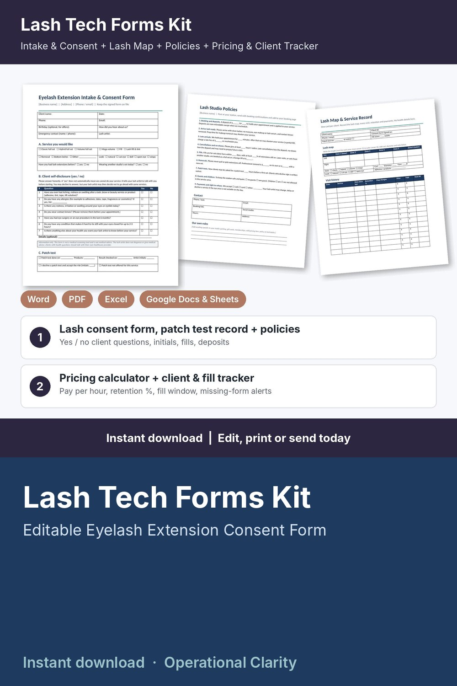

Lash Tech Forms Kit

Price your sets and fills, get the consent form and patch test record on file, and know when every client is due for a fill: a complete lash tech forms kit with a working pricing calculator and client tracker, not just a few printable pages.
WHAT'S INSIDE
- Eyelash Extension Intake & Consent Form (Word + PDF, 2 pages): client details, service and look wanted, simple yes / no client self-disclosure questions, patch test record or signed decline, 8 initialed acknowledgments (natural lash cycle and retention, no picking, professional removal, fill terms, written aftercare received, studio policies agreed), consent and release, photo consent, client and lash artist signatures, review / update log.
- Lash Studio Policies (Word + PDF): 9 ready-to-edit policies for deposits, arriving lash-ready, late arrivals, cancellations and no-shows, fills (fill window and % of lashes left), removals, patch tests, guests and children, payments and right to refuse, plus a blank page for your own aftercare instructions.
- Lash Map & Service Record (Word + PDF, 2 pages): lash map by zone for each eye (lengths, curl, diameter, fans, style, look), visit history with days since last visit and retention %, deposits and balances, retention notes.
- Lash Service Menu & Price List (Word + PDF): editable menu with times and prices for full sets, fills, lifts and add-ons.
- Lash Tech Pricing Calculator & Client Tracker (Google Sheets / Excel, 6 tabs):
* Service Menu: minutes, product cost and your price for each set, fill, lift and add-on; suggested price from your target hourly pay, overhead and card fees; what you keep and your real pay per hour; BELOW SUGGESTED flag
* Settings: target pay, monthly overhead, booked hours, card fees, deposit % and minimum, rounding, fill window
* Clients: contact details, lash map, consent form date, patch test date or waiver, visits, total spent, average retention at fills, next fill due and rebook alerts (REBOOK NOW / DUE SOON / BOOKED); no health information stored
* Appointments: service and add-on looked up from your menu, discounts, deposits, refunds, status, retention % at fills, days since last visit, balances and alerts (CONSENT MISSING / PATCH TEST MISSING / BALANCE DUE / DEPOSIT DUE / SEND FORMS / FILL WINDOW PASSED / UPCOMING / UPDATE STATUS)
* Dashboard: revenue, tips, product costs, card fees, what you keep, pay per hour worked, average ticket, average retention, no-show rate, deposits held, month-by-month and service-by-service tables, chart and a list of appointments that need attention
- START HERE guide (PDF)
HOW IT WORKS
1. Enter your target pay, overhead, card fees and fill window on Settings.
2. Add your services on the Service Menu tab, fix anything flagged BELOW SUGGESTED, and copy your prices into the printable menu.
3. Send new clients the policies and the Intake & Consent Form before their first set; note the consent date and patch test (or waiver) on Clients.
4. Log each booking and deposit; price, time and product cost fill in automatically, and late fills are flagged.
5. After each visit, record payment, tip and retention %, and watch the alerts for missing forms, balances, deposits and clients due for a fill.
Example data (10 services, 14 sample clients, 60 appointments) shows how it all connects; delete it and type your own. Yellow cells = type here, green cells = calculated.
FORMATS
- Word .docx (edit in Microsoft Word, Google Docs, Pages or LibreOffice) + PDF, US Letter
- Excel .xlsx made for Google Sheets (also works in Excel and LibreOffice; no macros)
This is an instant digital download, no physical item will be shipped.
Editable template, not legal advice. Have it reviewed by a local attorney and check your state board of cosmetology and local requirements (consent wording, patch tests, client records) before you use it. The client questions are simple yes / no self-disclosures: information only, not a medical screening tool and not medical advice. No aftercare or medical advice is included.